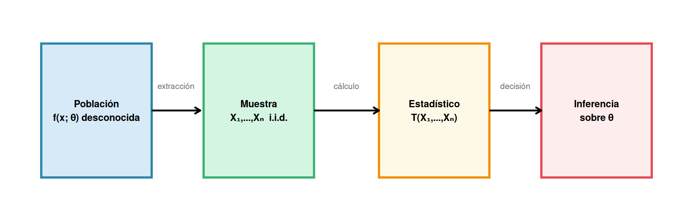
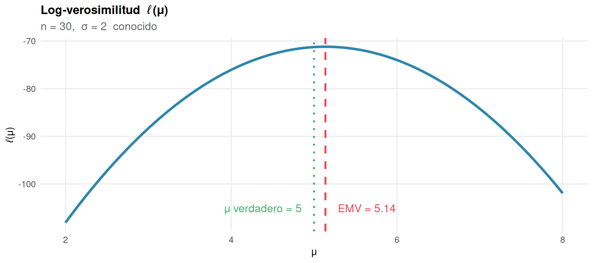
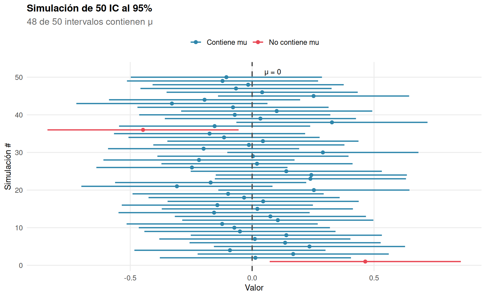
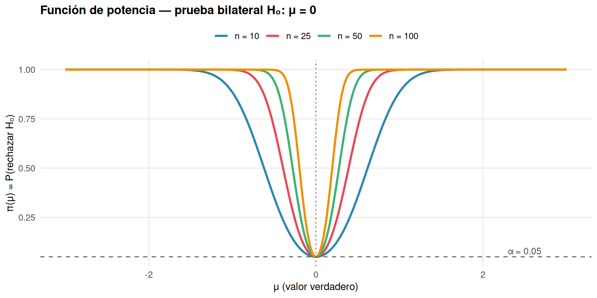
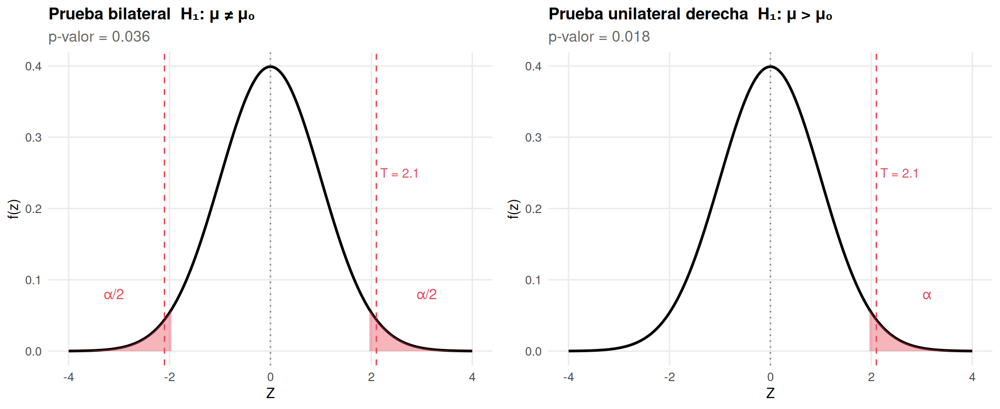
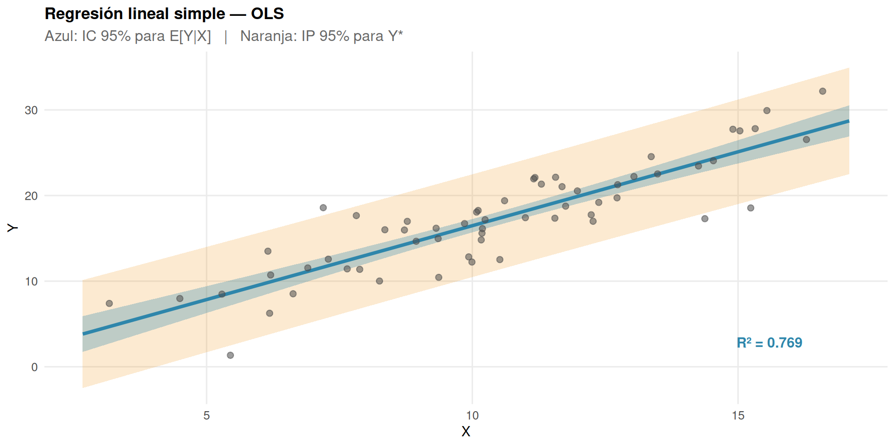
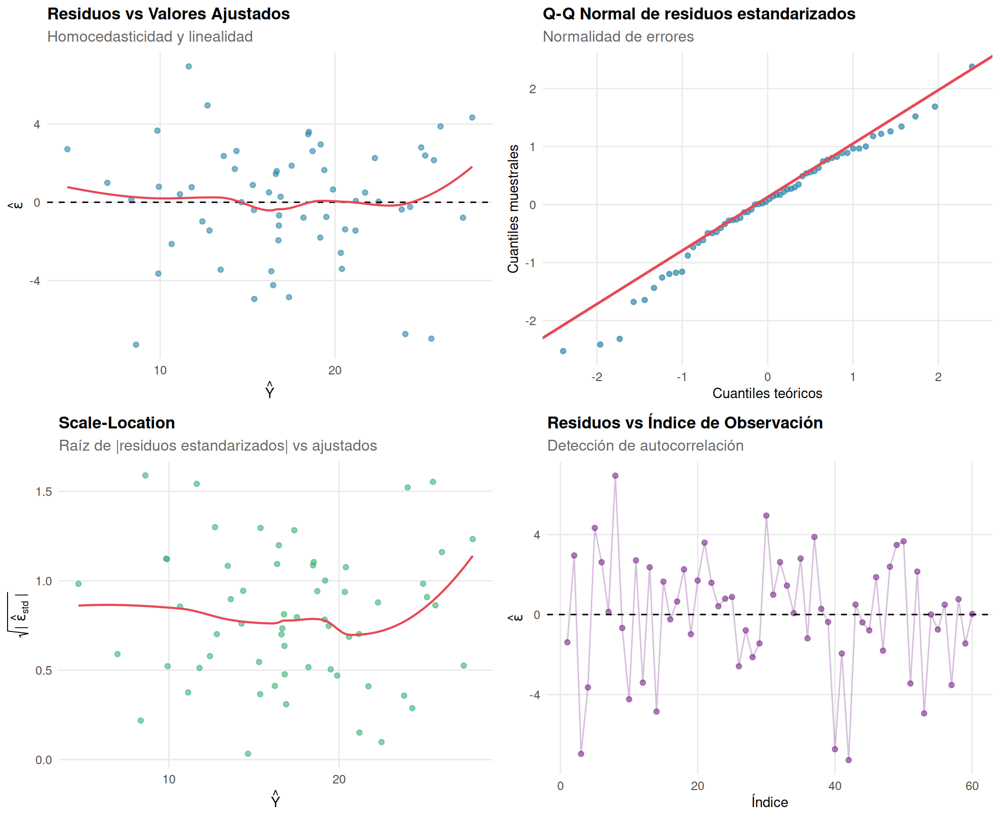

Inferencia Estadística
Estimación, Intervalos de Confianza, Pruebas de Hipótesis y Regresión Lineal
Marco General de la Inferencia Estadística
La inferencia estadística utiliza datos de una muestra para obtener conclusiones sobre una población desconocida.
Supuesto fundamental: \(X_1, \ldots, X_n \overset{\text{iid}}{\sim} f(x;\,\theta)\), donde \(\theta \in \Theta\) es el parámetro desconocido de interés.
Un estadístico es cualquier función \(T = T(X_1,\ldots,X_n)\) que no depende de \(\theta\). Su distribución en el muestreo se llama distribución muestral.
Estimación Puntual
Definición de Estimador
Un estimador de \(\theta\) es un estadístico \(\hat\theta = T(X_1,\ldots,X_n)\) que toma valores en \(\Theta\). Una vez observada la muestra, su valor realizado \(\hat\theta(x_1,\ldots,x_n)\) se llama estimación.
Propiedades de los Estimadores
Sesgo (Bias)
\[\text{Sesgo}(\hat\theta) = B(\hat\theta) = E[\hat\theta] - \theta\]
- Insesgado: \(B(\hat\theta) = 0\), es decir, \(E[\hat\theta] = \theta\)
- Asintóticamente insesgado: \(B(\hat\theta_n) \to 0\) cuando \(n \to \infty\)
Ejemplos canónicos:
| Estimador | Parámetro | \(E[\hat\theta]\) | Insesgado |
|---|---|---|---|
| \(\bar X = \frac{1}{n}\sum X_i\) | \(\mu\) | \(\mu\) | ✓ |
| \(S^2 = \frac{1}{n-1}\sum(X_i-\bar X)^2\) | \(\sigma^2\) | \(\sigma^2\) | ✓ |
| \(\tilde\sigma^2 = \frac{1}{n}\sum(X_i-\bar X)^2\) | \(\sigma^2\) | \(\frac{n-1}{n}\sigma^2\) | ✗ (sesgado) |
| \(X_{(n)} = \max_i X_i\) | \(\beta\) en \(U(0,\beta)\) | \(\frac{n}{n+1}\beta\) | ✗ |
Error Cuadrático Medio (ECM)
\[\text{ECM}(\hat\theta) = E\!\left[(\hat\theta - \theta)^2\right]\]
Descomposición sesgo–varianza:
\[\text{ECM}(\hat\theta) = \text{Var}(\hat\theta) + \left[B(\hat\theta)\right]^2\]
Un estimador insesgado minimiza el ECM dentro de su clase si y solo si minimiza la varianza.
Consistencia
\(\hat\theta_n\) es consistente si \(\hat\theta_n \xrightarrow{P} \theta\) cuando \(n \to \infty\):
\[\forall\,\varepsilon > 0:\quad \lim_{n\to\infty} P\!\left(|\hat\theta_n - \theta| > \varepsilon\right) = 0\]
Condición suficiente: si \(E[\hat\theta_n] \to \theta\) y \(\text{Var}(\hat\theta_n) \to 0\), entonces \(\hat\theta_n\) es consistente (por la desigualdad de Chebyshev).
Eficiencia y Cota de Cramér–Rao
Bajo condiciones de regularidad, la varianza de cualquier estimador insesgado de \(\theta\) satisface:
\[\text{Var}(\hat\theta) \geq \frac{1}{I_n(\theta)}\]
donde \(I_n(\theta) = n\,I(\theta)\) es la información de Fisher muestral y:
\[I(\theta) = E\!\left[\left(\frac{\partial}{\partial\theta}\log f(X;\theta)\right)^2\right] = -E\!\left[\frac{\partial^2}{\partial\theta^2}\log f(X;\theta)\right]\]
Un estimador insesgado que alcanza la cota se llama eficiente (UMVUE).
Eficiencia relativa entre dos estimadores insesgados \(\hat\theta_1\), \(\hat\theta_2\):
\[e(\hat\theta_1, \hat\theta_2) = \frac{\text{Var}(\hat\theta_2)}{\text{Var}(\hat\theta_1)}\]
Si \(e > 1\), el estimador \(\hat\theta_1\) es más eficiente.
Suficiencia
\(T(X_1,\ldots,X_n)\) es suficiente para \(\theta\) si la distribución condicional de la muestra dado \(T = t\) no depende de \(\theta\):
\[f(x_1,\ldots,x_n \mid T=t) \text{ no depende de } \theta\]
Criterio de factorización de Fisher–Neyman:
\[f(x_1,\ldots,x_n;\theta) = g(T(\mathbf{x}),\theta)\cdot h(\mathbf{x})\]
Métodos de Estimación
Método de Momentos (MM)
Se igualan los momentos poblacionales con los momentos muestrales:
\[\mu'_k(\theta) = E[X^k] \stackrel{!}{=} \hat\mu'_k = \frac{1}{n}\sum_{i=1}^n X_i^k, \qquad k = 1, 2, \ldots, p\]
Se resuelve el sistema para obtener \(\hat\theta_{\text{MM}}\).
Propiedades: consistente, asintóticamente normal. No siempre eficiente.
Máxima Verosimilitud (EMV)
Dado el vector de observaciones \(\mathbf{x} = (x_1,\ldots,x_n)\), la función de verosimilitud es:
\[L(\theta;\mathbf{x}) = \prod_{i=1}^n f(x_i;\theta)\]
El estimador de máxima verosimilitud es:
\[\hat\theta_{\text{MV}} = \operatorname*{argmax}_{\theta \in \Theta}\; L(\theta;\mathbf{x})\]
En la práctica se maximiza la log-verosimilitud:
\[\ell(\theta) = \log L(\theta;\mathbf{x}) = \sum_{i=1}^n \log f(x_i;\theta)\]
Condición de primer orden (ecuación de verosimilitud):
\[\frac{\partial\,\ell(\theta)}{\partial\theta} = \sum_{i=1}^n \frac{\partial}{\partial\theta}\log f(x_i;\theta) = 0\]
Propiedades asintóticas del EMV
Bajo condiciones de regularidad, cuando \(n \to \infty\):
| Propiedad | Enunciado |
|---|---|
| Consistencia | \(\hat\theta_{\text{MV}} \xrightarrow{P} \theta_0\) |
| Normalidad asintótica | \(\sqrt{n}(\hat\theta_{\text{MV}} - \theta_0) \xrightarrow{d} \mathcal{N}(0,\, I(\theta_0)^{-1})\) |
| Eficiencia asintótica | Alcanza la cota de Cramér–Rao en el límite |
| Invarianza | Si \(\hat\theta_{\text{MV}}\) es EMV de \(\theta\), entonces \(g(\hat\theta_{\text{MV}})\) es EMV de \(g(\theta)\) |
EMV para la Normal \(\mathcal{N}(\mu,\sigma^2)\)
\[\hat\mu_{\text{MV}} = \bar X = \frac{1}{n}\sum X_i \qquad \text{(insesgado)}\]
\[\hat\sigma^2_{\text{MV}} = \frac{1}{n}\sum_{i=1}^n(X_i - \bar X)^2 \qquad \text{(sesgado, pero consistente)}\]
n <- 30
mu0 <- 5
sig <- 2
x_obs <- rnorm(n, mu0, sig)
mu_grid <- seq(2, 8, length.out = 300)
loglik <- sapply(mu_grid, function(m)
sum(dnorm(x_obs, m, sig, log = TRUE)))
emv <- mean(x_obs)
ggplot(data.frame(mu = mu_grid, ll = loglik), aes(mu, ll)) +
geom_line(colour = pal[1], linewidth = 1.3) +
geom_vline(xintercept = emv, colour = pal[2], linetype = "dashed", linewidth = 1) +
geom_vline(xintercept = mu0, colour = pal[3], linetype = "dotted", linewidth = 1) +
annotate("text", x = emv + 0.15, y = min(loglik) + 3,
label = paste0("EMV = ", round(emv, 2)), colour = pal[2], hjust = 0) +
annotate("text", x = mu0 - 0.15, y = min(loglik) + 3,
label = paste0("μ verdadero = ", mu0), colour = pal[3], hjust = 1) +
labs(title = "Log-verosimilitud ℓ(μ)",
subtitle = paste0("n = ", n, ", σ = ", sig, " conocido"),
x = "μ", y = "ℓ(μ)")
Intervalos de Confianza
Definición
Un intervalo de confianza (IC) al nivel \(1-\alpha\) para \(\theta\) es un par de estadísticos \((L_n, U_n)\) tal que:
\[P\!\left(L_n \leq \theta \leq U_n\right) \geq 1 - \alpha, \qquad \forall\,\theta \in \Theta\]
ImportanteInterpretación frecuentista correcta
El intervalo no tiene probabilidad \(1-\alpha\) de contener \(\theta\) una vez observado — \(\theta\) es fijo y el IC es o no lo contiene. La interpretación correcta es: si repitiéramos el experimento muchas veces, el \((1-\alpha)\times 100\%\) de los intervalos construidos contendría el verdadero \(\theta\).
Método Pivotal
Un pivote es una función \(Q = Q(X_1,\ldots,X_n;\theta)\) cuya distribución no depende de \(\theta\). Si se conocen los cuantiles \(q_{\alpha/2}\) y \(q_{1-\alpha/2}\) de \(Q\):
\[P\!\left(q_{\alpha/2} \leq Q \leq q_{1-\alpha/2}\right) = 1 - \alpha\]
se despeja \(\theta\) para obtener el IC.
Intervalos Clásicos para la Normal
Sea \(X_1,\ldots,X_n \overset{\text{iid}}{\sim} \mathcal{N}(\mu,\sigma^2)\).
IC para \(\mu\) con \(\sigma^2\) conocido
Pivote: \(\quad Z = \dfrac{\bar X - \mu}{\sigma/\sqrt{n}} \sim \mathcal{N}(0,1)\)
\[\text{IC}_{1-\alpha}(\mu) = \left(\bar X - z_{\alpha/2}\,\frac{\sigma}{\sqrt{n}},\;\; \bar X + z_{\alpha/2}\,\frac{\sigma}{\sqrt{n}}\right)\]
donde \(z_{\alpha/2} = \Phi^{-1}(1-\alpha/2)\).
Longitud del IC: \(\quad \ell = 2\,z_{\alpha/2}\,\dfrac{\sigma}{\sqrt{n}}\)
IC para \(\mu\) con \(\sigma^2\) desconocido
Pivote: \(\quad T = \dfrac{\bar X - \mu}{S/\sqrt{n}} \sim t_{n-1}\)
\[\text{IC}_{1-\alpha}(\mu) = \left(\bar X - t_{n-1,\,\alpha/2}\,\frac{S}{\sqrt{n}},\;\; \bar X + t_{n-1,\,\alpha/2}\,\frac{S}{\sqrt{n}}\right)\]
IC para \(\sigma^2\)
Pivote: \(\quad \chi^2 = \dfrac{(n-1)S^2}{\sigma^2} \sim \chi^2_{n-1}\)
\[\text{IC}_{1-\alpha}(\sigma^2) = \left(\frac{(n-1)S^2}{\chi^2_{n-1,\,\alpha/2}},\;\; \frac{(n-1)S^2}{\chi^2_{n-1,\,1-\alpha/2}}\right)\]
Este IC no es simétrico (porque \(\chi^2\) no lo es).
IC para la diferencia de medias
Varianzas conocidas:
\[\text{IC}_{1-\alpha}(\mu_1-\mu_2) = (\bar X_1 - \bar X_2) \pm z_{\alpha/2} \sqrt{\frac{\sigma_1^2}{n_1}+\frac{\sigma_2^2}{n_2}}\]
Varianzas desconocidas iguales (\(\sigma_1^2 = \sigma_2^2 = \sigma^2\)):
\[S_p^2 = \frac{(n_1-1)S_1^2 + (n_2-1)S_2^2}{n_1+n_2-2} \quad \text{(varianza combinada)}\]
\[\text{IC}_{1-\alpha}(\mu_1-\mu_2) = (\bar X_1 - \bar X_2) \pm t_{n_1+n_2-2,\,\alpha/2}\;S_p\sqrt{\frac{1}{n_1}+\frac{1}{n_2}}\]
Tamaño de Muestra
Fijado un margen de error \(e\) y nivel \(1-\alpha\), para estimar \(\mu\) con \(\sigma\) conocido:
\[n \geq \left(\frac{z_{\alpha/2}\,\sigma}{e}\right)^2\]
Relación IC – Longitud – Confianza
n_sim <- 50; n_obs <- 25; mu_true <- 0; sig_ic <- 1; alpha_ic <- 0.05
z_a2 <- qnorm(1 - alpha_ic / 2)
set.seed(7)
sims <- replicate(n_sim, {
xs <- rnorm(n_obs, mu_true, sig_ic)
xb <- mean(xs)
m <- z_a2 * sig_ic / sqrt(n_obs)
c(xb - m, xb + m)
})
df_ic <- data.frame(
id = 1:n_sim,
lo = sims[1,],
hi = sims[2,],
xbar = colMeans(sims)
) |>
mutate(cubre = lo <= mu_true & mu_true <= hi,
color = ifelse(cubre, pal[1], pal[2]))
ggplot(df_ic, aes(y = id)) +
geom_segment(aes(x = lo, xend = hi, yend = id, colour = color), linewidth = 0.8) +
geom_point(aes(x = xbar, colour = color), size = 1.8) +
geom_vline(xintercept = mu_true, linetype = "dashed", linewidth = 0.8, colour = "grey30") +
scale_colour_identity(
guide = guide_legend(title = NULL),
breaks = c(pal[1], pal[2]),
labels = c("Contiene mu", "No contiene mu")) +
annotate("text", x = mu_true + 0.05, y = n_sim + 1.5,
label = "μ = 0", hjust = 0, size = 3.5) +
labs(title = paste0("Simulación de ", n_sim, " IC al 95%"),
subtitle = paste0(sum(df_ic$cubre), " de ", n_sim,
" intervalos contienen μ"),
x = "Valor", y = "Simulación #")
Pruebas de Hipótesis
Formulación del Problema
Una prueba de hipótesis decide entre dos hipótesis sobre \(\theta\):
\[H_0: \theta \in \Theta_0 \qquad \text{vs} \qquad H_1: \theta \in \Theta_1, \qquad \Theta_0 \cap \Theta_1 = \emptyset\]
| Nombre | Forma | Ejemplo |
|---|---|---|
| Simple | Un único valor | \(H_0: \theta = \theta_0\) |
| Compuesta bilateral | \(H_0: \theta = \theta_0\) vs \(H_1: \theta \neq \theta_0\) | |
| Compuesta unilateral derecha | \(H_0: \theta \leq \theta_0\) vs \(H_1: \theta > \theta_0\) | |
| Compuesta unilateral izquierda | \(H_0: \theta \geq \theta_0\) vs \(H_1: \theta < \theta_0\) |
Tipos de Error
| \(H_0\) verdadera | \(H_0\) falsa | |
|---|---|---|
| No rechazar \(H_0\) | Decisión correcta (\(1-\alpha\)) | Error tipo II (\(\beta\)) |
| Rechazar \(H_0\) | Error tipo I (\(\alpha\)) | Decisión correcta (\(1-\beta\)) |
\[\alpha = P(\text{rechazar } H_0 \mid H_0 \text{ verdadera}) \quad \text{(nivel de significancia)}\] \[\beta = P(\text{no rechazar } H_0 \mid H_1 \text{ verdadera}) \quad \text{(probabilidad de error tipo II)}\] \[1 - \beta = \text{Potencia de la prueba}\]
NotaDilema \(\alpha\)–\(\beta\)
Para tamaño de muestra fijo, reducir \(\alpha\) aumenta \(\beta\) y viceversa. La única forma de reducir ambos simultáneamente es aumentar \(n\).
Función de Potencia
\[\pi(\theta) = P(\text{rechazar } H_0 \mid \theta) = \begin{cases} \alpha & \text{si } \theta \in \Theta_0 \\ 1-\beta(\theta) & \text{si } \theta \in \Theta_1 \end{cases}\]
Una prueba ideal tiene \(\pi(\theta) \approx 0\) para \(\theta \in \Theta_0\) y \(\pi(\theta) \approx 1\) para \(\theta \in \Theta_1\).
mu_grid_p <- seq(-3, 3, length.out = 300)
sig_p <- 1; mu0_p <- 0; alpha_p <- 0.05
potencia <- function(mu, n, mu0 = 0, sig = 1, alpha = 0.05) {
z_crit <- qnorm(1 - alpha / 2)
se <- sig / sqrt(n)
# P(rechazar H0) = P(Z < -z_c | μ) + P(Z > z_c | μ)
pnorm(-z_crit, mean = (mu - mu0)/se) +
pnorm( z_crit, mean = (mu - mu0)/se, lower.tail = FALSE)
}
df_pot <- expand.grid(mu = mu_grid_p, n = c(10, 25, 50, 100)) |>
mutate(pot = mapply(potencia, mu, n),
n = factor(paste0("n = ", n), levels = paste0("n = ", c(10,25,50,100))))
ggplot(df_pot, aes(mu, pot, colour = n)) +
geom_line(linewidth = 1.1) +
geom_hline(yintercept = alpha_p, linetype = "dashed", colour = "grey40") +
geom_vline(xintercept = 0, linetype = "dotted", colour = "grey40") +
scale_colour_manual(values = pal[1:4], name = NULL) +
annotate("text", x = 2.5, y = alpha_p + 0.03,
label = paste0("α = ", alpha_p), colour = "grey30", size = 3.5) +
labs(title = "Función de potencia — prueba bilateral H₀: μ = 0",
x = "μ (valor verdadero)", y = "π(μ) = P(rechazar H₀)")
Estadístico de Prueba y Región de Rechazo
El procedimiento general:
- Elegir estadístico \(T = T(X_1,\ldots,X_n)\) cuya distribución bajo \(H_0\) sea conocida
- Fijar \(\alpha\) y determinar la región crítica \(C_\alpha\) tal que \(P(T \in C_\alpha \mid H_0) = \alpha\)
- Si \(T_{\text{obs}} \in C_\alpha\): rechazar \(H_0\)
Pruebas Clásicas para la Normal
Prueba \(Z\) (σ conocido)
\[H_0: \mu = \mu_0 \qquad Z = \frac{\bar X - \mu_0}{\sigma/\sqrt{n}} \sim \mathcal{N}(0,1)\]
| Hipótesis alternativa | Región de rechazo |
|---|---|
| \(H_1: \mu \neq \mu_0\) | \(|Z| > z_{\alpha/2}\) |
| \(H_1: \mu > \mu_0\) | \(Z > z_\alpha\) |
| \(H_1: \mu < \mu_0\) | \(Z < -z_\alpha\) |
Prueba \(t\) de una muestra (σ desconocido)
\[H_0: \mu = \mu_0 \qquad T = \frac{\bar X - \mu_0}{S/\sqrt{n}} \sim t_{n-1}\]
Regiones de rechazo análogas a la prueba \(Z\) pero usando cuantiles \(t_{n-1,\alpha}\).
Prueba \(t\) de dos muestras independientes
\[H_0: \mu_1 = \mu_2 \qquad T = \frac{\bar X_1 - \bar X_2}{S_p\sqrt{1/n_1+1/n_2}} \sim t_{n_1+n_2-2}\]
(asumiendo \(\sigma_1^2 = \sigma_2^2\); si no, se usa la aproximación de Welch).
Prueba \(\chi^2\) para la varianza
\[H_0: \sigma^2 = \sigma_0^2 \qquad \chi^2 = \frac{(n-1)S^2}{\sigma_0^2} \sim \chi^2_{n-1}\]
Prueba \(F\) para igualdad de varianzas
\[H_0: \sigma_1^2 = \sigma_2^2 \qquad F = \frac{S_1^2}{S_2^2} \sim F_{n_1-1,\,n_2-1}\]
El \(p\)-valor
\[p\text{-valor} = P(|T| \geq |T_{\text{obs}}| \mid H_0)\]
Mide la evidencia en contra de \(H_0\): la probabilidad de observar un resultado al menos tan extremo como el obtenido, si \(H_0\) fuera cierta.
| \(p\)-valor | Interpretación convencional |
|---|---|
| \(> 0.10\) | Sin evidencia contra \(H_0\) |
| \(0.05 - 0.10\) | Evidencia débil |
| \(0.01 - 0.05\) | Evidencia moderada |
| \(< 0.01\) | Evidencia fuerte |
| \(< 0.001\) | Evidencia muy fuerte |
AdvertenciaEl \(p\)-valor no es \(P(H_0 \text{ verdadera})\)
Un \(p\)-valor pequeño indica que los datos son improbables bajo \(H_0\), pero no cuantifica la probabilidad de que \(H_0\) sea falsa. Tampoco mide la magnitud del efecto.
x_seq <- seq(-4, 4, length.out = 500)
df_z <- data.frame(x = x_seq, y = dnorm(x_seq))
t_obs <- 2.1; z_c <- qnorm(0.975)
shade <- function(lo, hi) {
sub <- df_z |> filter(x >= lo, x <= hi)
geom_area(data = sub, aes(x = x, y = y), fill = pal[2], alpha = 0.4, inherit.aes = FALSE)
}
p_bil <- ggplot(df_z, aes(x, y)) +
geom_line(linewidth = 1) +
shade(-4, -z_c) + shade(z_c, 4) +
geom_vline(xintercept = c(-t_obs, t_obs), colour = pal[2], linetype = "dashed") +
geom_vline(xintercept = 0, colour = "grey50", linetype = "dotted") +
annotate("text", x = 3.1, y = 0.08, label = "α/2", colour = pal[2], size = 4) +
annotate("text", x = -3.1, y = 0.08, label = "α/2", colour = pal[2], size = 4) +
annotate("text", x = t_obs, y = 0.25,
label = paste0("T = ", t_obs), colour = pal[2], hjust = -0.1, size = 3.5) +
labs(title = "Prueba bilateral H₁: μ ≠ μ₀",
subtitle = paste0("p-valor = ", round(2*pnorm(-t_obs), 3)),
x = "Z", y = "f(z)")
p_uni <- ggplot(df_z, aes(x, y)) +
geom_line(linewidth = 1) +
shade(z_c, 4) +
geom_vline(xintercept = t_obs, colour = pal[2], linetype = "dashed") +
geom_vline(xintercept = 0, colour = "grey50", linetype = "dotted") +
annotate("text", x = 3.1, y = 0.08, label = "α", colour = pal[2], size = 4) +
annotate("text", x = t_obs, y = 0.25,
label = paste0("T = ", t_obs), colour = pal[2], hjust = -0.1, size = 3.5) +
labs(title = "Prueba unilateral derecha H₁: μ > μ₀",
subtitle = paste0("p-valor = ", round(pnorm(-t_obs), 3)),
x = "Z", y = "f(z)")
grid.arrange(p_bil, p_uni, ncol = 2)
Relación entre IC y Pruebas de Hipótesis
Existe una dualidad exacta:
Rechazar \(H_0: \theta = \theta_0\) al nivel \(\alpha\) \(\;\iff\;\) \(\theta_0 \notin \text{IC}_{1-\alpha}(\theta)\)
Para una prueba bilateral, el IC al \(1-\alpha\) y la prueba al nivel \(\alpha\) son equivalentes y llevan siempre a la misma decisión.
Lema de Neyman–Pearson
Para contrastar \(H_0: \theta = \theta_0\) vs \(H_1: \theta = \theta_1\) (hipótesis simples), la prueba más potente de nivel \(\alpha\) es la prueba de razón de verosimilitud:
\[\Lambda(\mathbf{x}) = \frac{L(\theta_1;\mathbf{x})}{L(\theta_0;\mathbf{x})} > k_\alpha\]
donde \(k_\alpha\) se determina por \(P(\Lambda > k_\alpha \mid H_0) = \alpha\).
Prueba de Razón de Verosimilitud (PRV)
Para hipótesis compuestas, el estadístico generalizado es:
\[\Lambda(\mathbf{x}) = \frac{\sup_{\theta \in \Theta_0} L(\theta;\mathbf{x})} {\sup_{\theta \in \Theta} L(\theta;\mathbf{x})} = \frac{L(\hat\theta_0)}{L(\hat\theta_{\text{MV}})} \in [0,1]\]
Teorema de Wilks: bajo \(H_0\) y condiciones de regularidad,
\[-2\log\Lambda(\mathbf{X}) \xrightarrow{d} \chi^2_r \quad (n \to \infty)\]
donde \(r = \dim(\Theta) - \dim(\Theta_0)\) es el número de restricciones.
Regresión Lineal Simple y OLS
El Modelo
\[Y_i = \beta_0 + \beta_1 X_i + \varepsilon_i, \qquad i = 1, \ldots, n\]
Supuestos clásicos (Gauss–Markov + normalidad):
| # | Supuesto | Notación |
|---|---|---|
| A1 | Linealidad | \(E[Y \mid X] = \beta_0 + \beta_1 X\) |
| A2 | Exogeneidad estricta | \(E[\varepsilon_i \mid X_1,\ldots,X_n] = 0\) |
| A3 | Homocedasticidad | \(\text{Var}(\varepsilon_i \mid X) = \sigma^2 < \infty\) |
| A4 | No autocorrelación | \(\text{Cov}(\varepsilon_i,\varepsilon_j) = 0,\; i \neq j\) |
| A5 | Normalidad | \(\varepsilon_i \mid X \sim \mathcal{N}(0,\sigma^2)\) |
Con A1–A4 aplica el teorema de Gauss–Markov; con A5 se obtienen distribuciones exactas para los estadísticos de prueba.
Estimador OLS
Se minimizan los residuos cuadráticos:
\[(\hat\beta_0, \hat\beta_1) = \operatorname*{argmin}_{\beta_0,\beta_1} \sum_{i=1}^n (Y_i - \beta_0 - \beta_1 X_i)^2 = \operatorname*{argmin} \text{SCR}(\beta)\]
Fórmulas cerradas:
\[\hat\beta_1 = \frac{\sum_{i=1}^n (X_i - \bar X)(Y_i - \bar Y)} {\sum_{i=1}^n (X_i - \bar X)^2} = \frac{S_{XY}}{S_{XX}} = \frac{\widehat{\text{Cov}}(X,Y)}{\widehat{\text{Var}}(X)}\]
\[\hat\beta_0 = \bar Y - \hat\beta_1\,\bar X\]
Notación compacta: definiendo \(S_{XX} = \sum(X_i-\bar X)^2\), \(S_{YY} = \sum(Y_i-\bar Y)^2\), \(S_{XY} = \sum(X_i-\bar X)(Y_i-\bar Y)\):
\[\hat\beta_1 = \frac{S_{XY}}{S_{XX}}, \qquad \hat r = \frac{S_{XY}}{\sqrt{S_{XX}\,S_{YY}}} = \hat\rho_{XY}\]
Propiedades de los Estimadores OLS
Bajo A1–A4 (Teorema de Gauss–Markov):
\[E[\hat\beta_j] = \beta_j \qquad \text{(insesgado)}\]
\[\text{Var}(\hat\beta_1) = \frac{\sigma^2}{S_{XX}}, \qquad \text{Var}(\hat\beta_0) = \sigma^2\left(\frac{1}{n} + \frac{\bar X^2}{S_{XX}}\right)\]
\[\text{Cov}(\hat\beta_0, \hat\beta_1) = -\frac{\sigma^2\,\bar X}{S_{XX}}\]
\(\hat\beta_0\) y \(\hat\beta_1\) son los mejores estimadores lineales insesgados (MELI/BLUE): tienen la varianza mínima dentro de la clase de estimadores lineales e insesgados.
Estimador de \(\sigma^2\):
\[\hat\sigma^2 = S^2_e = \frac{\text{SCR}}{n-2} = \frac{\sum_{i=1}^n \hat\varepsilon_i^2}{n-2}\]
donde \(\hat\varepsilon_i = Y_i - \hat Y_i\) son los residuos. Se divide por \(n-2\) porque se estiman 2 parámetros (\(\beta_0\) y \(\beta_1\)).
Bajo A5: \(\quad \dfrac{(n-2)S_e^2}{\sigma^2} \sim \chi^2_{n-2}\)
Distribución de los Estimadores bajo Normalidad
Bajo A1–A5:
\[\hat\beta_1 \sim \mathcal{N}\!\left(\beta_1,\; \frac{\sigma^2}{S_{XX}}\right)\]
\[\hat\beta_0 \sim \mathcal{N}\!\left(\beta_0,\; \sigma^2\left(\frac{1}{n}+\frac{\bar X^2}{S_{XX}}\right)\right)\]
Estadísticos de prueba (con \(\sigma^2\) estimado):
\[T_j = \frac{\hat\beta_j - \beta_j^0}{\text{se}(\hat\beta_j)} \sim t_{n-2}\]
donde \(\text{se}(\hat\beta_1) = \hat\sigma / \sqrt{S_{XX}}\).
Descomposición de la Varianza (ANOVA de Regresión)
\[\underbrace{\sum_{i=1}^n (Y_i-\bar Y)^2}_{\text{SCT}} = \underbrace{\sum_{i=1}^n (\hat Y_i - \bar Y)^2}_{\text{SCR}_{\text{reg}}} + \underbrace{\sum_{i=1}^n (Y_i-\hat Y_i)^2}_{\text{SCR}_{\text{res}}}\]
| Fuente | SC | gl | CM | \(F\) |
|---|---|---|---|---|
| Regresión | \(\text{SCR}_{\text{reg}}\) | \(1\) | \(\text{CM}_{\text{reg}}\) | \(\text{CM}_{\text{reg}}/\hat\sigma^2\) |
| Residual | \(\text{SCR}_{\text{res}}\) | \(n-2\) | \(\hat\sigma^2\) | |
| Total | \(\text{SCT}\) | \(n-1\) |
Coeficiente de Determinación \(R^2\)
\[R^2 = \frac{\text{SCR}_{\text{reg}}}{\text{SCT}} = 1 - \frac{\text{SCR}_{\text{res}}}{\text{SCT}} \in [0,1]\]
Propiedades:
| Propiedad | Enunciado |
|---|---|
| Interpretación | Proporción de variabilidad de \(Y\) explicada por \(X\) |
| Relación con \(\hat r\) | \(R^2 = \hat\rho_{XY}^2\) (solo en regresión simple) |
| No mide causalidad | Un \(R^2\) alto no implica que \(X\) cause \(Y\) |
| Sensible a \(n\) y \(k\) | Aumenta artificialmente con más regresores |
Intervalos de Confianza en Regresión
IC para \(\beta_1\):
\[\text{IC}_{1-\alpha}(\beta_1) = \hat\beta_1 \pm t_{n-2,\,\alpha/2}\,\frac{\hat\sigma}{\sqrt{S_{XX}}}\]
IC para la respuesta media \(E[Y \mid X = x^*]\):
\[\hat Y^* \pm t_{n-2,\,\alpha/2}\;\hat\sigma\sqrt{\frac{1}{n} + \frac{(x^*-\bar X)^2}{S_{XX}}}\]
Intervalo de predicción para una nueva observación \(Y^*\):
\[\hat Y^* \pm t_{n-2,\,\alpha/2}\;\hat\sigma\sqrt{1 + \frac{1}{n} + \frac{(x^*-\bar X)^2}{S_{XX}}}\]
El intervalo de predicción es siempre más ancho que el IC de la media porque incorpora tanto la incertidumbre en \(E[Y\mid X]\) como la variabilidad individual de \(Y\).
set.seed(21)
n_r <- 60
x_r <- rnorm(n_r, 10, 3)
y_r <- 2 + 1.5 * x_r + rnorm(n_r, 0, 3)
df_r <- data.frame(x = x_r, y = y_r)
fit_r <- lm(y ~ x, data = df_r)
x_pred <- seq(min(x_r) - 0.5, max(x_r) + 0.5, length.out = 200)
ci_m <- predict(fit_r, newdata = data.frame(x = x_pred),
interval = "confidence", level = 0.95)
ci_p <- predict(fit_r, newdata = data.frame(x = x_pred),
interval = "prediction", level = 0.95)
df_band <- data.frame(
x = x_pred,
fit = ci_m[,"fit"],
ci_lo = ci_m[,"lwr"], ci_hi = ci_m[,"upr"],
pi_lo = ci_p[,"lwr"], pi_hi = ci_p[,"upr"]
)
ggplot() +
geom_ribbon(data = df_band, aes(x, ymin = pi_lo, ymax = pi_hi),
fill = pal[4], alpha = 0.18) +
geom_ribbon(data = df_band, aes(x, ymin = ci_lo, ymax = ci_hi),
fill = pal[1], alpha = 0.30) +
geom_line(data = df_band, aes(x, fit), colour = pal[1], linewidth = 1.3) +
geom_point(data = df_r, aes(x, y), alpha = 0.55, size = 2, colour = "grey30") +
annotate("text", x = max(x_r) - 1, y = min(y_r) + 1.5,
label = paste0("R² = ", round(summary(fit_r)$r.squared, 3)),
size = 4, colour = pal[1], fontface = "bold") +
labs(
title = "Regresión lineal simple — OLS",
subtitle = "Azul: IC 95% para E[Y|X] | Naranja: IP 95% para Y*",
x = "X", y = "Y"
)
Verificación de Supuestos
df_diag <- data.frame(
fitted = fitted(fit_r),
residuals = residuals(fit_r),
std_res = rstandard(fit_r),
obs = seq_len(n_r)
)
# 1. Residuos vs Ajustados (homocedasticidad / linealidad)
p_rv <- ggplot(df_diag, aes(fitted, residuals)) +
geom_point(alpha = 0.6, colour = pal[1]) +
geom_hline(yintercept = 0, linetype = "dashed") +
geom_smooth(se = FALSE, colour = pal[2], linewidth = 0.8, method = "loess") +
labs(title = "Residuos vs Valores Ajustados",
subtitle = "Homocedasticidad y linealidad",
x = expression(hat(Y)), y = expression(hat(epsilon)))
# 2. QQ-plot (normalidad)
p_qq <- ggplot(df_diag, aes(sample = std_res)) +
stat_qq(colour = pal[1], alpha = 0.7) +
stat_qq_line(colour = pal[2], linewidth = 1) +
labs(title = "Q-Q Normal de residuos estandarizados",
subtitle = "Normalidad de errores",
x = "Cuantiles teóricos", y = "Cuantiles muestrales")
# 3. Scale-Location (homocedasticidad)
p_sl <- ggplot(df_diag, aes(fitted, sqrt(abs(std_res)))) +
geom_point(alpha = 0.6, colour = pal[3]) +
geom_smooth(se = FALSE, colour = pal[2], linewidth = 0.8, method = "loess") +
labs(title = "Scale-Location",
subtitle = "Raíz de |residuos estandarizados| vs ajustados",
x = expression(hat(Y)), y = expression(sqrt("|"~hat(epsilon)[std]~"|")))
# 4. Residuos vs Índice (autocorrelación)
p_idx <- ggplot(df_diag, aes(obs, residuals)) +
geom_point(alpha = 0.6, colour = pal[5]) +
geom_hline(yintercept = 0, linetype = "dashed") +
geom_line(alpha = 0.3, colour = pal[5]) +
labs(title = "Residuos vs Índice de Observación",
subtitle = "Detección de autocorrelación",
x = "Índice", y = expression(hat(epsilon)))
grid.arrange(p_rv, p_qq, p_sl, p_idx, ncol = 2)`geom_smooth()` using formula = 'y ~ x'
`geom_smooth()` using formula = 'y ~ x'
| Gráfico | Supuesto verificado | Señal de problema |
|---|---|---|
| Residuos vs Ajustados | Linealidad + homocedasticidad | Patrón sistemático o embudo |
| Q-Q Normal | Normalidad de \(\varepsilon\) | Desviaciones en las colas |
| Scale-Location | Homocedasticidad | Tendencia creciente |
| Residuos vs Índice | No autocorrelación | Patrón temporal o cíclico |
Resumen General
| Tema | Concepto | Resultado clave |
|---|---|---|
| Estimación Puntual | ||
| Estimación | Insesgadez | $E[\hat\theta] = \theta$ |
| Estimación | ECM | $\text{ECM} = \text{Var} + \text{Sesgo}^2$ |
| Estimación | Consistencia | $\hat\theta_n \xrightarrow{P} \theta$ |
| Estimación | Cota C-R | $\text{Var}(\hat\theta) \geq 1/I_n(\theta)$ |
| Estimación | EMV invarianza | $g(\hat\theta_{\text{MV}})$ es EMV de $g(\theta)$ |
| Intervalos de Confianza | ||
| IC | Pivote normal | $Z = (\bar X - \mu)/(\sigma/\sqrt{n}) \sim \mathcal{N}(0,1)$ |
| IC | Pivote t | $T = (\bar X - \mu)/(S/\sqrt{n}) \sim t_{n-1}$ |
| IC | Pivote chi² | $\chi^2 = (n-1)S^2/\sigma^2 \sim \chi^2_{n-1}$ |
| IC | Tamaño muestral | $n \geq (z_{\alpha/2}\,\sigma/e)^2$ |
| Pruebas de Hipótesis | ||
| Hipótesis | Error tipo I | $\alpha = P(\text{rechazar}\,H_0 \mid H_0)$ |
| Hipótesis | Error tipo II | $\beta = P(\text{no rechazar}\,H_0 \mid H_1)$ |
| Hipótesis | Potencia | $1 - \beta = P(\text{rechazar}\,H_0 \mid H_1)$ |
| Hipótesis | Wilks | $-2\log\Lambda \xrightarrow{d} \chi^2_r$ |
| Regresión OLS | ||
| OLS | Estimador $\hat\beta_1$ | $S_{XY}/S_{XX}$ |
| OLS | Gauss-Markov | OLS es MELI (BLUE) bajo A1–A4 |
| OLS | Varianza $\hat\beta_1$ | $\sigma^2/S_{XX}$ |
| OLS | $R^2$ | $1 - \text{SCR}_{\text{res}}/\text{SCT} \in [0,1]$ |
| OLS | Estadístico $t$ | $T_j = \hat\beta_j/\text{se}(\hat\beta_j) \sim t_{n-2}$ |
TipCadena lógica de la inferencia clásica
\[\text{Muestra i.i.d.} \;\xrightarrow{\text{estadístico}}\; T \;\xrightarrow{\text{dist. muestral}}\; \mathcal{N},\,t,\,\chi^2,\,F \;\xrightarrow{\text{cuantiles}}\; \text{IC / región crítica} \;\xrightarrow{\text{decisión}}\; \text{Inferencia sobre } \theta\]
NotaSupuestos en regresión: consecuencias de las violaciones
| Violación | Consecuencia |
|---|---|
| Omisión de variable relevante | Sesgo en \(\hat\beta\) (OLS no insesgado) |
| Heterocedasticidad | OLS insesgado pero ineficiente; errores estándar incorrectos |
| Autocorrelación | Igual que heterocedasticidad |
| No normalidad | IC y pruebas solo aproximados (válidos asintóticamente) |
| Endogeneidad (\(E[\varepsilon\mid X]\neq 0\)) | Sesgo e inconsistencia (usar IV/2SLS) |